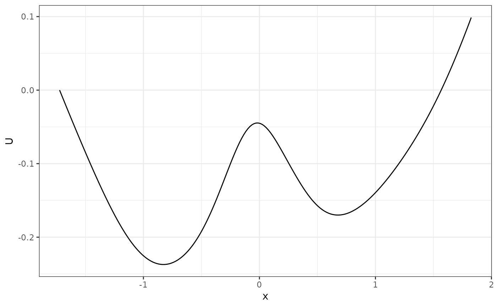
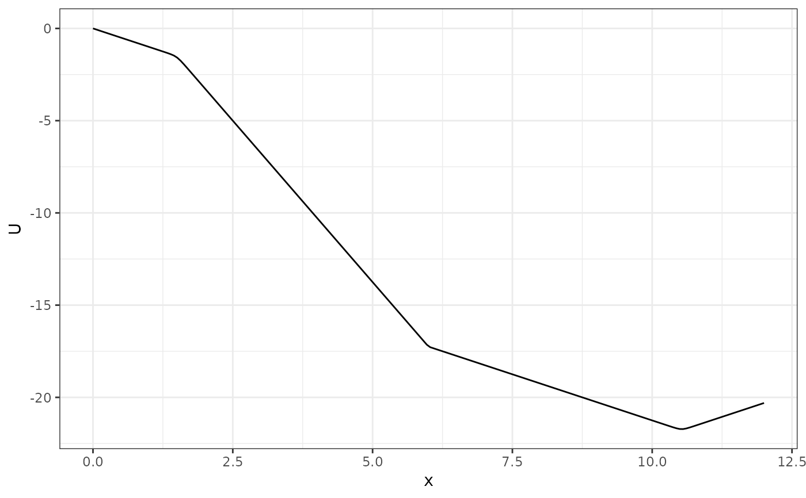
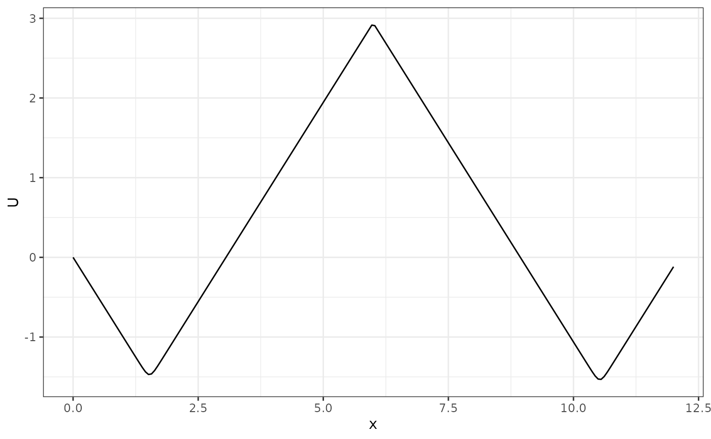

Estimate a 2D potential landscape from data with the MVKE method
Source:R/2d_landscape.R
fit_2d_ld.RdThis function is a wrapper of the MVKE method (see MVKE()) that produces a 2D potential landscape from 1D data. The landscape is constructed by estimating the gradient of the data and then integrating it. The MVKE method is a non-parametric method that estimates the gradient of the data by using a kernel density estimator. The potential landscape is then constructed by integrating the gradient.
Usage
fit_2d_ld(
data,
x,
lims,
n = 200L,
vector_position = "start",
na_action = "omit_data_points",
method = c("MVKE"),
subdivisions = 100L,
rel.tol = .Machine$double.eps^0.25,
abs.tol = rel.tol,
stop.on.error = TRUE,
keep.xy = FALSE,
aux = NULL,
...
)
# S3 method for class '`2d_MVKE_landscape`'
summary(object, ...)Arguments
- data
A data frame or matrix containing the data. The data frame should contain at least a column, with the column name indicated by
x, that represents the dimension for landscape construction.- x
The column name of the data frame that represents the dimension for landscape construction.
- lims
The limits of the range for the landscape calculation as
c(xl, xu).- n
The number of equally spaced points in the axis, at which the landscape is to be estimated.
- vector_position
One of "start", "middle", or "end", representing the position of the vectors. If "start", for example, the starting point of a vector is regarded as the position of the vector.
- na_action
One of "omit_data_points" or "omit_vectors". If using "omit_data_points", then only the
NApoints are omitted, and the points before and after anNAwill form a vector. If using "omit_vectors", then the vectors will be omitted if either of its points isNA.- method
The method used to estimate the gradient. Currently only "MVKE" is supported.
- subdivisions
the maximum number of subintervals.
- rel.tol
relative accuracy requested.
- abs.tol
absolute accuracy requested.
- stop.on.error
logical. If true (the default) an error stops the function. If false some errors will give a result with a warning in the
messagecomponent.- keep.xy
unused. For compatibility with S.
- aux
unused. For compatibility with S.
- ...
Additional arguments passed to
MVKE(). (Not used for thesummary()function).- object
An object of class
2d_MVKE_landscapereturned byfit_2d_ld().
Value
A 2d_MVKE_landscape object, which contains the following components:
dist: A data frame containing the estimated potential landscape. The data frame has two columns:xandU, wherexis the position andUis the potential.p: A ggplot object containing the plot of the potential landscape.
Examples
# generate data
single_output_grad <- simlandr::sim_fun_grad(length = 200, seed = 1614)
# fit the landscape
l <- fit_2d_ld(single_output_grad, "x")
summary(l)
#> 2 local minima were found.
#> x U
#> 1 -0.8310960 -0.2371366
#> 2 0.6845536 -0.1698856
plot(l)

# different behaviors for different `na_action` choices
l1 <- fit_2d_ld(data.frame(x = c(1, 2, 1, 2, NA, NA, NA, 10, 11, 10, 11)), "x")
#> NA(s) found in the data. Those data points were omitted.
plot(l1)

l2 <- fit_2d_ld(data.frame(x = c(1, 2, 1, 2, NA, NA, NA, 10, 11, 10, 11)), "x",
na_action = "omit_vectors")
#> NA(s) found in the data. Those vectors were omitted.
plot(l2)
